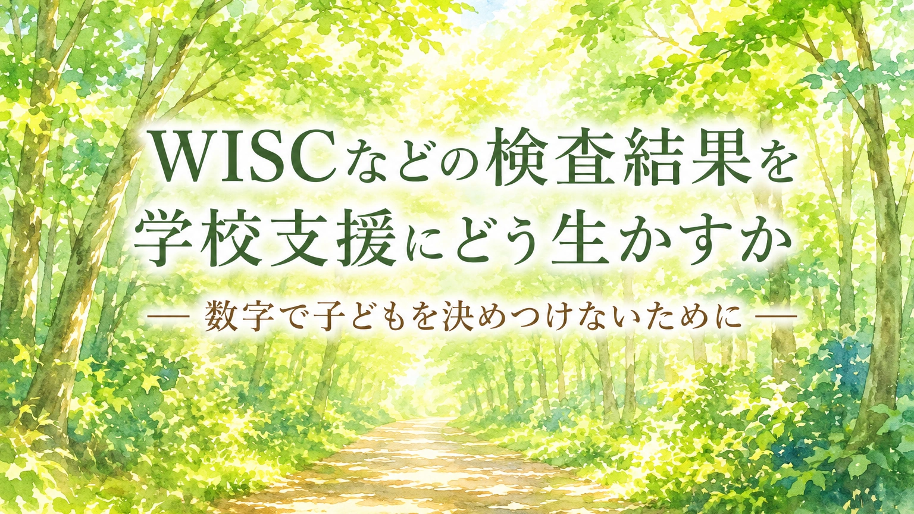

WISCなどの検査結果を受け取ったとき、保護者は戸惑うことがあります。 FSIQ、言語理解、ワーキングメモリー、処理速度。 数字や専門用語は並んでいるけれど、学校で何を変えればよいのかが見えにくい。 そして、数字が子どもの将来を決めてしまうように感じて、不安になることもあります。 この記事では、検査結果を「子どもを決めつける数字」ではなく、 学校での支援を考えるための手がかりとして、どう読み、どう伝え、どう生かすかを整理します。
1. WISCとは何を見る検査か
WISCは、子どもの知的な働き方を多面的に見るための検査です。 「頭の良さに点数をつける検査」と受け取られがちですが、 学校支援で大切なのは、単に高い・低いを見ることではありません。
むしろ、どのような考え方が得意なのか、 どのような作業で疲れやすいのか、 聞くこと、見ること、覚えておくこと、すばやく処理することの間に差があるのかを見ます。
WISCの結果は、診断名を決めるためだけのものではありません。 学校生活で困っている理由を整理し、 どのような支援があれば本人が力を出しやすいのかを考える材料になります。
ただし、WISCの専門的な解釈は、医師、心理士、公認心理師、臨床心理士など、 検査を実施・解釈する専門職の所見と合わせて見る必要があります。 保護者や学校が、数字だけを切り取って判断することは避けたほうがよいです。
2. FSIQやIQだけで判断しない
検査結果を見ると、保護者はどうしてもFSIQやIQに目が行きます。 全体の数字が高いか低いかで、子どもの力や将来が決まってしまうように感じることがあります。
しかし、学校支援で重要なのは、全体の数字だけではありません。 たとえば、全体の数値が平均的でも、ワーキングメモリーや処理速度が相対的に低い場合、 授業中の指示、板書、宿題、テスト時間で大きく困ることがあります。
反対に、言葉で説明する力が高い子は、大人から「わかっているはず」と見られやすくなります。 けれども、書く、写す、順番に作業する、時間内に終えることが苦手な場合、 実際の学校生活では大きな負担を抱えていることがあります。
検査結果を見るときは、まず次の三つに分けます。
- 全体としてどのくらいの力が見えているか
- どの指標が比較的強く、どの指標が弱く出ているか
- 学校や家庭での困りごとと、結果がどうつながるか
数字は、子どもを決めるものではありません。 困りごとの理由を探し、支援を考えるための手がかりです。
3. WISC-Vの主な指標を簡単に見る
WISCには版があり、使われている版によって指標名や構成が異なります。 ここでは、WISC-Vでよく出てくる主要な指標を、学校生活に結びつけて簡単に説明します。 実際には、検査者の所見と合わせて確認してください。
| 指標 | 簡単に言うと | 学校で関係しやすい場面 |
|---|---|---|
| 言語理解 | 言葉で考えたり、説明したり、知識を使ったりする力 | 先生の説明を理解する、言葉で答える、理由を説明する |
| 視空間 | 見た情報の形や位置関係をとらえる力 | 図形、板書、ノートの配置、地図、図表、工作 |
| 流動性推理 | 初めて見る問題のルールや関係性を考える力 | 応用問題、パターンを見つける、初めての課題に取り組む |
| ワーキングメモリー | 聞いたことや見たことを一時的に覚えながら作業する力 | 口頭指示、暗算、板書しながら聞く、複数の手順を覚える |
| 処理速度 | 簡単な作業を正確に、すばやく進める力 | 書く速さ、プリント、テスト時間、板書、作業量 |
指標の名前を覚えることが目的ではありません。 大切なのは、 「この子は、どのような場面で力を出しやすく、どのような場面で負担が大きくなるのか」 を考えることです。
4. 検査結果を学校支援へ翻訳する
検査結果は、受け取っただけでは支援になりません。 学校生活の具体的な場面に翻訳して、初めて支援に使えます。
たとえば、「ワーキングメモリーが弱い」と書かれていても、 それだけでは担任の先生は何をすればよいかわかりにくいことがあります。 そこで、次のように変換します。
「口頭で複数の指示を聞くと、途中で抜けやすいようです。
指示を短く区切る、板書やメモに残す、手順表を使うなどを試したいです。」
このように、検査結果を 学校で見える困りごとと 試したい支援に変えることが重要です。
| 検査で見える傾向 | 学校で起きやすいこと | 支援の例 |
|---|---|---|
| ワーキングメモリーが弱い | 口頭指示が抜ける。手順を忘れる。聞きながら書くことが難しい | 指示を短くする。板書やメモに残す。手順表を使う |
| 処理速度が低い | 書くのが遅い。時間内に終わらない。急ぐとミスが増える | 課題量を調整する。書く量を減らす。ICTを使う。時間を延ばす |
| 言語理解が強い | 話すと理解しているように見えるが、作業が追いつかない場合がある | 「わかっているのにやらない」と見ず、出力方法や作業量を調整する |
| 視覚的な情報が入りやすい | 聞くより、見たほうが理解しやすい | 予定表、図、板書、写真、チェックリストを使う |
| 指標間の差が大きい | できる場面とできない場面の差が大きく、誤解されやすい | 得意な方法で理解し、苦手な方法では補助を入れる |
支援は、本人を甘やかすためではありません。 本人が持っている力を、学校生活の中で出しやすくするための調整です。
5. よくある結果の見え方と支援例
ここでは、保護者が相談でよく悩みやすい結果の見え方を、学校支援に結びつけて整理します。 ただし、これは一般的な例です。 実際の解釈は、検査者の所見、本人の様子、学校での観察を合わせて考える必要があります。
例1：言葉ではよく説明できるのに、書く作業が進まない
言語理解が比較的高く、処理速度や書字に関わる作業が弱い場合、 大人からは「わかっているのにやらない」と見られやすくなります。 しかし、本人は理解していても、書く量や速さで疲れている場合があります。
支援としては、板書量を減らす、プリントを用意する、穴埋め式にする、 タブレット入力を検討する、テスト時間や解答方法を調整するなどが考えられます。
例2：話を聞いているのに、指示が抜ける
ワーキングメモリーに弱さがあると、本人は聞く気があっても、 複数の指示を頭に保持しながら作業することが難しい場合があります。
支援としては、指示を一つずつ出す、最後に復唱する、黒板やカードに残す、 「まず一つ目」「終わったら次」と手順を分ける方法があります。
例3：考える力はあるのに、テストで時間が足りない
考える力や理解力があっても、処理速度や書字の負担が大きいと、 テストやプリントで力を出し切れないことがあります。
支援としては、問題数の調整、時間延長、別室受験、解答欄の工夫、 記述量の調整、ICTの活用などを学校と相談できます。
例4：得意な場面と苦手な場面の差が大きい
指標の差が大きい子は、ある場面ではよくできるのに、 別の場面では急にできなくなるように見えることがあります。 そのため、大人から「やればできるのに」「気分でやっている」と誤解されやすくなります。
支援としては、得意な入力方法や理解方法を使いながら、 苦手な出力方法には補助を入れることが大切です。
6. 検査所見を読むときのポイント
検査結果では、数字そのものよりも、所見の文章が重要なことがあります。 所見には、検査中の様子、課題への取り組み方、得意・苦手の傾向、 支援の方向性が書かれている場合があります。
所見で確認したいこと
- どの力が比較的強いと書かれているか
- どの場面で負担が大きいと書かれているか
- 検査中に集中が途切れた場面はあるか
- 時間制限がある課題で力を出しにくかったか
- 口頭説明、視覚情報、手順の提示のどれが入りやすそうか
- 学校でどのような配慮が考えられると書かれているか
- 家庭での支援について何が提案されているか
検査結果の数字だけを学校に渡しても、支援につながりにくいことがあります。 可能であれば、検査者に 「学校にはどの部分を伝えるとよいか」 「授業や宿題ではどんな配慮が考えられるか」 を確認しておくと、相談しやすくなります。
7. 学校に伝えるときの伝え方
学校に検査結果を伝えるときは、数字を見せるだけでなく、 家庭や学校で見えている困りごとと結びつけて伝えます。
相談の切り出し方
「検査結果をもとに、子どもを決めつけたいわけではありません。 学校でどのような場面に負担があり、どの支援が合いそうかを一緒に考えたいです。」
ワーキングメモリーについて相談するとき
「検査では、聞いたことを一時的に覚えながら作業することに負担が出やすいとありました。 授業中の指示を短く区切る、板書やメモに残すなどを試せないでしょうか。」
処理速度について相談するとき
「理解はしていても、書く作業や時間制限で力を出しにくいようです。 課題量、板書量、提出方法、テスト時間などを調整できるか相談したいです。」
支援を試して見直したいとき
「まず2週間ほど、指示をメモに残す方法を試して、 本人の様子を見ながら続けるか、別の方法にするかを相談させてください。」
相談では、検査結果を学校に突きつけるのではなく、 子どもの学びやすさを一緒に考える材料として共有します。
8. 検査結果を渡すときの注意
検査結果には、子どもの大切な個人情報が含まれます。 学校に共有することは有効ですが、何を、誰に、どの範囲で共有するかは慎重に考えます。
共有前に確認したいこと
- 検査結果の全文を渡すのか、必要部分を要約して渡すのか
- 担任だけでなく、特別支援教育コーディネーターや管理職にも共有するのか
- 本人にはどのように説明しているか
- 学級の友達に知られる必要があるか
- 個別の教育支援計画や個別の指導計画に反映するか
- 検査者から学校向けの所見や助言をもらえるか
検査結果を共有する目的は、子どもを分類することではありません。 学校で必要な支援を考えることです。 その目的に照らして、共有する範囲を決めます。
また、検査問題の内容や下位検査の詳しい中身を、保護者が学校や周囲に細かく説明する必要はありません。 大切なのは、検査の秘密を守りながら、支援に必要な情報を伝えることです。
9. 子ども本人にどう説明するか
検査結果を子ども本人に伝えるときも、数字をそのまま伝えるより、 本人の生活に近い言葉に変えることが大切です。
| 避けたい伝え方 | 置き換えたい伝え方 |
|---|---|
| 「この数字が低いから苦手」 | 「聞いたことを覚えながら作業するのは疲れやすいみたいだね」 |
| 「IQがこうだから仕方ない」 | 「あなたに合うやり方を使うと、力を出しやすくなるよ」 |
| 「書くのが遅いのは検査でも出ている」 | 「考える力と、書く速さは別の力だね。書き方を工夫しよう」 |
| 「この結果だから無理」 | 「どの方法ならできるかを一緒に探そう」 |
子どもに必要なのは、自分の数字を知ることよりも、 自分がどんな場面で困りやすく、どうすれば楽になるかを知ることです。
10. 学校相談前の整理メモ
検査結果を学校支援に生かすには、相談前に情報を整理しておくと役立ちます。 次のようなメモを作ると、学校との話し合いが具体的になります。
このメモの目的は、学校に数字を見せることではありません。 検査結果を、本人が学びやすくなる具体的な支援に変えることです。
11. 避けたい言葉と、置き換えたい言葉
検査結果をめぐる言葉は、子どもにも保護者にも強く残ります。 数字を使うときほど、決めつけにならない言葉を選ぶことが大切です。
| 避けたい言葉 | 置き換えたい言葉 |
|---|---|
| 「IQが低いからできない」 | 「この方法だと負担が大きい。別の方法を試そう」 |
| 「IQが高いから支援はいらない」 | 「全体の力があっても、特定の場面で困ることがある」 |
| 「処理速度が低い子」 | 「速く処理する場面で疲れやすい子」 |
| 「検査で出ているからこうしてください」 | 「検査結果と学校での様子を合わせて、支援を相談したいです」 |
| 「この数字がすべて」 | 「数字は一つの手がかり。日常の様子と合わせて考える」 |
まとめ：WISCの数字は、子どもを決めるものではなく支援を考える材料
WISCなどの検査結果を見ると、保護者は数字に目を奪われやすくなります。 しかし、子どもの価値や将来は、検査結果だけで決まるものではありません。
検査結果で大切なのは、全体の数値だけではなく、 得意な力、負担が出やすい力、その差が学校生活でどのように表れているかを見ることです。
ワーキングメモリーが弱いなら、指示を見える形にする。 処理速度が低いなら、課題量や時間、出力方法を調整する。 視覚的な情報が入りやすいなら、予定表や図を使う。 そのように、検査結果を日々の支援へ翻訳していきます。
検査はゴールではありません。 検査結果をもとに、家庭と学校が同じ地図を持ち、 本人が力を出しやすい条件を一緒に探すこと。 そこにこそ、検査を受けた意味があります。
検査結果を学校へどう伝えるか、どの支援から相談すればよいか迷うときは、一人で抱え込まなくて大丈夫です。 まなびの森教育研究所では、家庭で見えている困りごとと検査所見を、学校と共有しやすい言葉に整えるお手伝いをしています。
保護者向け相談ページを見る